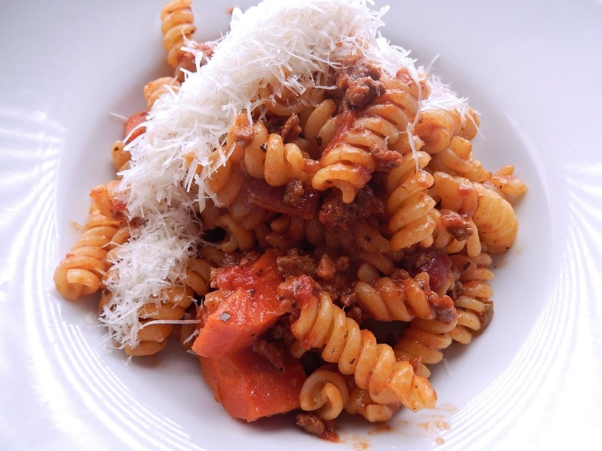

Pasta Recipe

Ingredients:
- 250g pasta (penne, spaghetti, or any type)
- 2 tbsp olive oil
- 2 cloves garlic (minced)
- 1 small onion (chopped)
- 1 can (400g) diced tomatoes
- 1 tsp dried basil
- ½ tsp salt
- ½ tsp black pepper
- ½ tsp red chili flakes (optional)
- ¼ cup grated Parmesan cheese
- Fresh basil leaves for garnish
Instructions:
- Cook pasta according to package instructions until al dente. Drain and set aside.
- Heat olive oil in a pan over medium heat. Sauté garlic and onion until fragrant.
- Add diced tomatoes, dried basil, salt, pepper, and chili flakes. Simmer for 10 minutes.
- Add the cooked pasta to the sauce and mix well.
- Top with grated Parmesan cheese and garnish with fresh basil.
- Serve warm and enjoy!